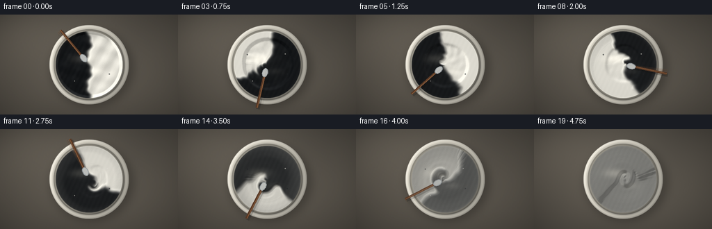
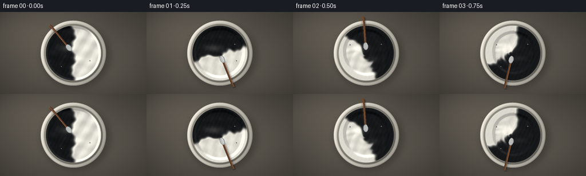

CODING AGENTS AS PIXEL WORLD MODELS
traex/DeepSeek-V4.1-Flash · material_0001
点击播放 · 原生 RGB 像素
逐轮保存的候选
回放视频、检查图与代码变化。
每份候选均可单独播放。实际图片检查记录在下方工具轨迹中。
候选 01播放与检查图
点击播放 · 原生 RGB 像素


展开代码变化
--- 上一保存版本
+++ 本次保存版本
@@ -0,0 +1,377 @@
+from pathlib import Path
+import math
+
+import numpy as np
+from PIL import Image, ImageDraw, ImageFilter
+
+import artifact_io
+
+
+CASE_DIR = Path(__file__).resolve().parent
+WIDTH = 256
+HEIGHT = 144
+FRAMES = 20
+FPS = 4.0
+SS = 2
+W = WIDTH * SS
+H = HEIGHT * SS
+
+
+def smoothstep(edge0, edge1, x):
+ value = np.clip((x - edge0) / (edge1 - edge0), 0.0, 1.0)
+ return value * value * (3.0 - 2.0 * value)
+
+
+def gaussian_blur(array, radius):
+ image = Image.fromarray(np.clip(array * 255.0, 0, 255).astype(np.uint8))
+ image = image.filter(ImageFilter.GaussianBlur(radius))
+ return np.asarray(image, dtype=np.float32) / 255.0
+
+
+def bilinear(field, sample_x, sample_y):
+ sample_x = np.clip(sample_x, 0.0, field.shape[1] - 1.001)
+ sample_y = np.clip(sample_y, 0.0, field.shape[0] - 1.001)
+ x0 = sample_x.astype(np.int32)
+ y0 = sample_y.astype(np.int32)
+ x1 = np.minimum(x0 + 1, field.shape[1] - 1)
+ y1 = np.minimum(y0 + 1, field.shape[0] - 1)
+ fx = sample_x - x0
+ fy = sample_y - y0
+ top = field[y0, x0] * (1.0 - fx) + field[y0, x1] * fx
+ bottom = field[y1, x0] * (1.0 - fx) + field[y1, x1] * fx
+ return top * (1.0 - fy) + bottom * fy
+
+
+def velocity_field(xx, yy, time_value):
+ cx = W * 0.5
+ cy = H * 0.5
+ dx = xx - cx
+ dy = yy - cy
+ radius = np.sqrt(dx * dx + dy * dy) + 0.01
+ theta = np.arctan2(dy, dx)
+
+ # Differential rotation creates shear instead of merely rotating the blobs.
+ angular = 4.5 + 1.35 * np.cos(0.55 * theta - 1.2 * time_value)
+ tangential = angular * radius
+ vx = -dy / radius * tangential
+ vy = dx / radius * tangential
+
+ # A travelling pair of vortices folds the paint and keeps the motion lively.
+ for side in (-1.0, 1.0):
+ angle = side * 1.15 + 2.2 * time_value + 0.25 * math.sin(3.0 * time_value + side)
+ vortex_x = cx + 25.0 * math.cos(angle)
+ vortex_y = cy + 25.0 * math.sin(angle)
+ ox = xx - vortex_x
+ oy = yy - vortex_y
+ falloff = np.exp(-(ox * ox + oy * oy) / 1550.0)
+ strength = side * 62.0 * (0.82 + 0.18 * math.sin(2.7 * time_value))
+ vx += -oy * strength * falloff / (np.sqrt(ox * ox + oy * oy) + 15.0)
+ vy += ox * strength * falloff / (np.sqrt(ox * ox + oy * oy) + 15.0)
+
+ # A gentle radial pulse makes the ribs overlap rather than stay parallel.
+ radial = 18.0 * np.sin(3.0 * theta - 2.5 * time_value) * np.exp(-radius / 80.0)
+ vx += dx / radius * radial
+ vy += dy / radius * radial
+ return vx, vy
+
+
+def initial_fields():
+ yy, xx = np.mgrid[0:H, 0:W].astype(np.float32)
+ cx = W * 0.5
+ cy = H * 0.5
+ radius = np.sqrt((xx - cx) ** 2 + (yy - cy) ** 2)
+
+ seam = cx + 6.0 * np.sin((yy - cy) / 13.0) + 2.2 * np.sin((yy - cy) / 4.5 + 0.8)
+ white_fraction = 1.0 / (1.0 + np.exp(-(xx - seam) / 2.5))
+
+ # Tiny undulations keep each paint mass from looking like a computer split.
+ texture = (
+ 0.012 * np.sin(xx * 0.17 + yy * 0.05)
+ + 0.009 * np.sin(xx * 0.06 - yy * 0.21 + 1.7)
+ + 0.006 * np.cos(xx * 0.31 + yy * 0.27)
+ )
+ white_fraction = np.clip(white_fraction + texture * (radius < 98.0), 0.0, 1.0)
+
+ # Thick paint has a raised seam and soft, irregular impasto ridges.
+ thickness = (
+ 0.86
+ + 0.19 * np.exp(-((xx - seam) / 5.5) ** 2)
+ + 0.05 * np.sin(xx * 0.12 + yy * 0.09)
+ + 0.035 * np.sin(xx * 0.035 - yy * 0.15 + 2.2)
+ )
+ thickness *= smoothstep(98.0, 88.0, radius)
+ return white_fraction.astype(np.float32), thickness.astype(np.float32)
+
+
+def evolve_simulations():
+ white, thickness = initial_fields()
+ yy, xx = np.mgrid[0:H, 0:W].astype(np.float32)
+ snapshots = []
+ substeps = 9
+
+ for frame_index in range(FRAMES):
+ if frame_index:
+ for step in range(substeps):
+ local = (step + 1) / substeps
+ time_value = (frame_index - 1 + local) / FPS
+ dt = 1.0 / (FPS * substeps)
+ vx, vy = velocity_field(xx, yy, time_value)
+ back_x = xx - vx * dt
+ back_y = yy - vy * dt
+ white = bilinear(white, back_x, back_y)
+ thickness = bilinear(thickness, back_x, back_y)
+
+ # Four-neighbour diffusion, increasing as the mixture breaks down.
+ blend = float(smoothstep(2.25, 4.65, time_value))
+ diffusion = 0.055 + 0.18 * blend
+ neighbour = (
+ np.roll(white, 1, axis=0)
+ + np.roll(white, -1, axis=0)
+ + np.roll(white, 1, axis=1)
+ + np.roll(white, -1, axis=1)
+ ) * 0.25
+ white += diffusion * (neighbour - white)
+ thickness += 0.022 * (neighbour - thickness)
+
+ # Homogenization is strongest during the final vigorous strokes.
+ white += (0.5 - white) * (0.0008 + 0.0105 * blend)
+
+ time_value = frame_index / FPS
+ render_white = white.copy()
+ homogenize = 0.985 * float(smoothstep(3.35, 4.78, time_value))
+ render_white = render_white * (1.0 - homogenize) + 0.5 * homogenize
+ snapshots.append((render_white.astype(np.float32), thickness.astype(np.float32)))
+ return snapshots
+
+
+def make_background():
+ yy, xx = np.mgrid[0:H, 0:W].astype(np.float32)
+ low = (
+ 0.55
+ + 0.11 * np.sin(xx * 0.011 + yy * 0.006)
+ + 0.07 * np.cos(xx * 0.004 - yy * 0.015 + 1.8)
+ + 0.045 * np.sin(xx * 0.026 + yy * 0.019)
+ )
+ grain = (
+ 0.018 * np.sin(xx * 0.73 + yy * 0.21)
+ + 0.014 * np.cos(xx * 0.37 - yy * 0.61)
+ + 0.009 * np.sin(xx * 1.31 + yy * 0.97)
+ )
+ base = np.stack(
+ [
+ (91.0 + 20.0 * low + 9.0 * grain),
+ (86.0 + 18.0 * low + 8.0 * grain),
+ (78.0 + 15.0 * low + 7.0 * grain),
+ ],
+ axis=2,
+ )
+
+ # A broad window reflection and vignette give the countertop a photographic falloff.
+ window = np.exp(-(((xx - 74.0) / 190.0) ** 2 + ((yy - 38.0) / 98.0) ** 2))
+ vignette = 1.0 - 0.23 * (((xx - W * 0.5) / (W * 0.65)) ** 2 + ((yy - H * 0.5) / (H * 0.72)) ** 2)
+ base *= (0.91 + 0.13 * window)[:, :, None] * np.clip(vignette, 0.72, 1.0)[:, :, None]
+ return np.clip(base, 0, 255)
+
+
+def soft_ellipse_layer(shape, center, radii, blur_radius, value):
+ mask = Image.new("L", (shape[1], shape[0]), 0)
+ draw = ImageDraw.Draw(mask)
+ cx, cy = center
+ rx, ry = radii
+ draw.ellipse((cx - rx, cy - ry, cx + rx, cy + ry), fill=value)
+ mask = mask.filter(ImageFilter.GaussianBlur(blur_radius))
+ return np.asarray(mask, dtype=np.float32) / 255.0
+
+
+def render_frame(background, white, thickness, frame_index):
+ time_value = frame_index / FPS
+ yy, xx = np.mgrid[0:H, 0:W].astype(np.float32)
+ cx = W * 0.5
+ cy = H * 0.5
+ dx = xx - cx
+ dy = yy - cy
+ radius = np.sqrt(dx * dx + dy * dy)
+ theta = np.arctan2(dy, dx)
+
+ image = background.copy()
+
+ # Cast shadow, bowl body, wall and rim are concentric so the vessel stays convincing.
+ shadow = soft_ellipse_layer((H, W), (cx + 8.0, cy + 10.0), (121.0, 111.0), 12.0, 145)
+ image *= (1.0 - 0.43 * shadow)[:, :, None]
+
+ outer_mask = np.clip((115.0 - radius) / 1.4, 0.0, 1.0)
+ rim_mask = np.clip((112.0 - radius) / 1.2, 0.0, 1.0)
+ bowl_light = 0.88 + 0.16 * (-dx / 115.0 * 0.7 - dy / 115.0 * 0.3)
+ bowl_color = np.stack(
+ [223.0 * bowl_light, 218.0 * bowl_light, 204.0 * bowl_light], axis=2
+ )
+ edge_shadow = np.exp(-((radius - 113.0) / 2.1) ** 2)
+ bowl_color *= (1.0 - 0.14 * edge_shadow)[:, :, None]
+ image = image * (1.0 - outer_mask[:, :, None]) + bowl_color * outer_mask[:, :, None]
+
+ wall_mask = np.clip((103.0 - radius) / 1.6, 0.0, 1.0)
+ wall_light = 0.72 + 0.16 * (-dx / 103.0 * 0.7 - dy / 103.0 * 0.25)
+ wall = np.stack([183.0 * wall_light, 178.0 * wall_light, 164.0 * wall_light], axis=2)
+ image = image * (1.0 - wall_mask[:, :, None]) + wall * wall_mask[:, :, None]
+
+ # Thin interior shadow under the near rim.
+ inner_shadow = np.exp(-((radius - 102.0) / 2.7) ** 2) * (0.55 + 0.45 * smoothstep(-0.2, 0.8, dy / 103.0))
+ image *= (1.0 - 0.23 * inner_shadow)[:, :, None]
+
+ paint_mask = np.clip((97.0 - radius) / 1.5, 0.0, 1.0)
+ white = np.clip(white, 0.0, 1.0)
+ black_color = np.array([21.0, 23.0, 25.0], dtype=np.float32)
+ white_color = np.array([239.0, 236.0, 225.0], dtype=np.float32)
+ paint = black_color[None, None, :] * (1.0 - white[:, :, None]) + white_color[None, None, :] * white[:, :, None]
+
+ # Soft impasto shading plus a wet, broad specular reflection.
+ height = gaussian_blur(thickness, 1.15)
+ gy, gx = np.gradient(height)
+ relief = np.clip(0.94 - 6.5 * gx - 5.0 * gy, 0.76, 1.10)
+ paint *= relief[:, :, None]
+
+ sheen = (
+ 0.65 * np.exp(-(((xx - (cx - 24.0)) / 30.0) ** 2 + ((yy - (cy - 17.0)) / 12.5) ** 2))
+ + 0.28 * np.exp(-(((xx - (cx + 22.0)) / 20.0) ** 2 + ((yy - (cy + 19.0)) / 9.0) ** 2))
+ )
+ sheen *= np.clip((98.0 - radius) / 12.0, 0.0, 1.0)
+ paint += sheen[:, :, None] * np.array([48.0, 46.0, 41.0], dtype=np.float32)[None, None, :]
+
+ # Fine glossy ridges move with the paint and catch the window light.
+ micro = np.clip(gx * 0.8 - gy * 0.6, -0.04, 0.08)
+ paint += (micro * 185.0)[:, :, None]
+ paint += (np.sin(xx * 0.45 + yy * 0.21) * 1.3)[:, :, None]
+ paint = np.clip(paint, 0.0, 255.0)
+ image = image * (1.0 - paint_mask[:, :, None]) + paint * paint_mask[:, :, None]
+
+ # The paint meniscus rises slightly at the bowl wall.
+ meniscus = np.exp(-((radius - 95.5) / 2.2) ** 2)
+ image += (meniscus * 7.0)[:, :, None] * np.array([1.0, 0.98, 0.92])[None, None, :]
+
+ # Ceramic rim highlights.
+ rim_band = np.clip((115.0 - radius) / 3.0, 0.0, 1.0) * np.clip((radius - 107.0) / 2.0, 0.0, 1.0)
+ rim_light = np.clip(0.35 + 0.65 * (-dx - 0.55 * dy) / 118.0, 0.0, 1.0)
+ image += (rim_band * rim_light * 23.0)[:, :, None]
+ glint = np.exp(-((radius - 112.5) / 1.25) ** 2) * np.clip((-0.65 * dx - 0.75 * dy) / 118.0, 0.0, 1.0)
+ image += (glint * 37.0)[:, :, None]
+
+ # A few tiny paint flecks on the rim make the action feel physical.
+ flecks = [
+ (-57.0, -29.0, 2.0, 0.0),
+ (52.0, -31.0, 1.6, 1.0),
+ (58.0, 27.0, 1.8, 0.0),
+ (-42.0, 47.0, 1.4, 1.0),
+ ]
+ fleck_alpha = 0.62 * (1.0 - smoothstep(3.6, 4.6, time_value))
+ for fx, fy, fr, is_white in flecks:
+ dist = np.sqrt((xx - (cx + fx)) ** 2 + (yy - (cy + fy)) ** 2)
+ spot = np.clip((fr + 0.8 - dist) / 1.4, 0.0, 1.0) * fleck_alpha
+ spot_color = np.array([226.0, 223.0, 213.0]) if is_white else np.array([32.0, 34.0, 36.0])
+ image = image * (1.0 - spot[:, :, None]) + spot_color[None, None, :] * spot[:, :, None]
+
+ # The stirrer is drawn as a small stainless spoon with a walnut handle.
+ tool_alpha = 1.0 - float(smoothstep(3.85, 4.55, time_value))
+ if tool_alpha > 0.01:
+ tool = Image.new("RGBA", (W, H), (0, 0, 0, 0))
+ draw = ImageDraw.Draw(tool)
+ angles = [
+ (-2.26 + 13.8 * time_value - 0.075, 0.16 * tool_alpha),
+ (-2.26 + 13.8 * time_value - 0.038, 0.23 * tool_alpha),
+ (-2.26 + 13.8 * time_value, tool_alpha),
+ ]
+ for angle, alpha in angles:
+ head_x = cx + 24.0 * math.cos(angle)
+ head_y = cy + 24.0 * math.sin(angle)
+ end_x = cx + 143.0 * math.cos(angle)
+ end_y = cy + 143.0 * math.sin(angle)
+ ux = math.cos(angle)
+ uy = math.sin(angle)
+ px = -uy
+ py = ux
+
+ # Handle shadow and body.
+ a = int(255 * alpha)
+ shaft_end_x = head_x + ux * 104.0
+ shaft_end_y = head_y + uy * 104.0
+ draw.line(
+ (head_x + 3.5, head_y + 4.0, shaft_end_x + 3.5, shaft_end_y + 4.0),
+ fill=(20, 18, 16, int(a * 0.26)),
+ width=10,
+ )
+ draw.line(
+ (head_x, head_y, shaft_end_x, shaft_end_y),
+ fill=(89, 58, 39, a),
+ width=7,
+ )
+ draw.line(
+ (head_x - px * 1.2, head_y - py * 1.2, shaft_end_x - px * 1.2, shaft_end_y - py * 1.2),
+ fill=(139, 94, 60, a),
+ width=2,
+ )
+
+ # Spoon bowl: a bright ellipse aligned with the handle.
+ points = []
+ for step in range(36):
+ phi = 2.0 * math.pi * step / 36.0
+ local_x = 13.0 * math.cos(phi)
+ local_y = 8.2 * math.sin(phi)
+ points.append((head_x + ux * local_x + px * local_y, head_y + uy * local_x + py * local_y))
+ draw.polygon(points, fill=(151, 156, 158, a))
+ inner_points = []
+ for step in range(32):
+ phi = 2.0 * math.pi * step / 32.0
+ local_x = 10.7 * math.cos(phi)
+ local_y = 6.2 * math.sin(phi)
+ inner_points.append(
+ (head_x + ux * local_x + px * local_y, head_y + uy * local_x + py * local_y)
+ )
+ draw.polygon(inner_points, fill=(188, 190, 187, a))
+ draw.line(
+ (
+ head_x - ux * 8.5 - px * 1.5,
+ head_y - uy * 8.5 - py * 1.5,
+ head_x + ux * 7.0 - px * 1.5,
+ head_y + uy * 7.0 - py * 1.5,
+ ),
+ fill=(231, 231, 225, int(a * 0.75)),
+ width=2,
+ )
+ image = np.asarray(Image.alpha_composite(Image.fromarray(np.clip(image, 0, 255).astype(np.uint8)).convert("RGBA"), tool).convert("RGB"), dtype=np.float32)
+
+ # Gentle photographic finish: slight bloom, vignette and restrained grain.
+ bright = np.clip((image - 205.0) / 50.0, 0.0, 1.0)
+ bloom = gaussian_blur(bright.mean(axis=2), 5.5)
+ image += bloom[:, :, None] * 7.0
+ image *= np.clip(1.0 - 0.10 * (((xx - W * 0.5) / (W * 0.60)) ** 2 + ((yy - H * 0.5) / (H * 0.72)) ** 2), 0.86, 1.0)[:, :, None]
+ grain = np.sin(xx * 1.93 + yy * 2.71) + np.sin(xx * 3.07 - yy * 1.19)
+ image += grain[:, :, None] * 0.42
+ return np.clip(image, 0, 255)
+
+
+def main():
+ snapshots = evolve_simulations()
+ background = make_background()
+ frames = []
+ for index, (white, thickness) in enumerate(snapshots):
+ rendered = render_frame(background, white, thickness, index)
+ frame = Image.fromarray(rendered.astype(np.uint8)).resize(
+ (WIDTH, HEIGHT), Image.Resampling.LANCZOS
+ )
+ frames.append(np.asarray(frame, dtype=np.uint8))
+
+ artifact_io.save(np.stack(frames), CASE_DIR)
+
+ # A compact preview is useful when the artifact is inspected outside the HTML player.
+ images = [Image.fromarray(frame) for frame in frames]
+ images[0].save(
+ CASE_DIR / "preview.gif",
+ save_all=True,
+ append_images=images[1:],
+ duration=round(1000 / FPS),
+ loop=0,
+ optimize=False,
+ )
+
+
+if __name__ == "__main__":
+ main()
候选 02播放与检查图
点击播放 · 原生 RGB 像素
展开代码变化
--- 上一保存版本
+++ 本次保存版本
@@ -82,7 +82,8 @@
radius = np.sqrt((xx - cx) ** 2 + (yy - cy) ** 2)
seam = cx + 6.0 * np.sin((yy - cy) / 13.0) + 2.2 * np.sin((yy - cy) / 4.5 + 0.8)
- white_fraction = 1.0 / (1.0 + np.exp(-(xx - seam) / 2.5))
+ split = np.clip((xx - seam) / 2.5, -40.0, 40.0)
+ white_fraction = 1.0 / (1.0 + np.exp(-split))
# Tiny undulations keep each paint mass from looking like a computer split.
texture = (
@@ -138,9 +139,11 @@
time_value = frame_index / FPS
render_white = white.copy()
- homogenize = 0.985 * float(smoothstep(3.35, 4.78, time_value))
+ homogenize = 0.994 * float(smoothstep(3.35, 4.78, time_value))
render_white = render_white * (1.0 - homogenize) + 0.5 * homogenize
- snapshots.append((render_white.astype(np.float32), thickness.astype(np.float32)))
+ settled = float(smoothstep(3.5, 4.5, time_value))
+ render_thickness = thickness * (1.0 - 0.82 * settled) + 0.86 * 0.82 * settled
+ snapshots.append((render_white.astype(np.float32), render_thickness.astype(np.float32)))
return snapshots
@@ -227,18 +230,20 @@
# Soft impasto shading plus a wet, broad specular reflection.
height = gaussian_blur(thickness, 1.15)
gy, gx = np.gradient(height)
- relief = np.clip(0.94 - 6.5 * gx - 5.0 * gy, 0.76, 1.10)
+ settled = float(smoothstep(3.5, 4.5, time_value))
+ relief_strength = 6.5 * (1.0 - 0.78 * settled)
+ relief = np.clip(0.94 - relief_strength * gx - relief_strength * 0.77 * gy, 0.76, 1.10)
paint *= relief[:, :, None]
sheen = (
0.65 * np.exp(-(((xx - (cx - 24.0)) / 30.0) ** 2 + ((yy - (cy - 17.0)) / 12.5) ** 2))
+ 0.28 * np.exp(-(((xx - (cx + 22.0)) / 20.0) ** 2 + ((yy - (cy + 19.0)) / 9.0) ** 2))
)
- sheen *= np.clip((98.0 - radius) / 12.0, 0.0, 1.0)
+ sheen *= np.clip((98.0 - radius) / 12.0, 0.0, 1.0) * (1.0 - 0.55 * settled)
paint += sheen[:, :, None] * np.array([48.0, 46.0, 41.0], dtype=np.float32)[None, None, :]
# Fine glossy ridges move with the paint and catch the window light.
- micro = np.clip(gx * 0.8 - gy * 0.6, -0.04, 0.08)
+ micro = np.clip(gx * 0.8 - gy * 0.6, -0.04, 0.08) * (1.0 - 0.88 * settled)
paint += (micro * 185.0)[:, :, None]
paint += (np.sin(xx * 0.45 + yy * 0.21) * 1.3)[:, :, None]
paint = np.clip(paint, 0.0, 255.0)
可观测工具轨迹
实际执行的命令与返回图片。
命令 1exit 0
/bin/bash -c "pwd && rg --files -g 'prompt.txt' -g 'GENERATION_RULES.md' -g 'task_spec.json' -g '"'!**/.git/**'"'"
命令 2exit 0
/bin/bash -c 'ls -la'
命令 3exit 0
/bin/bash -c 'git status --short --branch'
命令 4exit 0
/bin/bash -c 'cat prompt.txt'
命令 5exit 0
/bin/bash -c 'cat GENERATION_RULES.md'
命令 6exit 0
/bin/bash -c 'cat task_spec.json'
命令 7exit 0
/bin/bash -c "sed -n '1,240p' artifact_io.py"
命令 8exit 0
/bin/bash -c 'python -c "import numpy, PIL; print(numpy.__version__, PIL.__version__)"'
命令 9exit 0
/bin/bash -c 'command -v ffmpeg || true'
命令 10exit 0
/bin/bash -c 'python -c "import scipy; print(scipy.__version__)"'
命令 11exit 0
/bin/bash -c 'python generate.py'
命令 12exit 0
/bin/bash -c 'command -v chafa || command -v viu || command -v img2txt || true'
命令 13exit 0
/bin/bash -c "python - <<'PY'
from PIL import Image, ImageOps
im=Image.open('inspection.png').convert('L')
im=ImageOps.autocontrast(im)
im.thumbnail((100,48))
chars=' .:-=+*#%@'
pix=im.load()
for y in range(im.height):
print(''.join(chars[pix[x,y]*len(chars)//256] for x in range(im.width)))
PY"命令 14exit 0
/bin/bash -c "python - <<'PY'
from PIL import Image, ImageOps
chars=' .:-=+*#%@'
for idx in [0,4,8,12,16,19]:
im=Image.open(f'frames/{idx:02d}.png').convert('L')
im=ImageOps.autocontrast(im).resize((64,30))
print('\\nFRAME',idx)
for y in range(im.height): print(''.join(chars[p*len(chars)//256] for p in list(im.crop((0,y,im.width,y+1)).getdata())))
PY"命令 15exit 0
/bin/bash -c "python - <<'PY'
from pathlib import Path
import numpy as np
from PIL import Image
for i in range(20):
a=np.asarray(Image.open(f'frames/{i:02d}.png')).astype(float)
yy,xx=np.mgrid[:144,:256]
r=np.sqrt((xx-128)**2+(yy-72)**2)
core=a[r<75]
lum=core.mean(axis=1)
print(f'{i:02d} mean={lum.mean():6.2f} std={lum.std():6.2f} p05={np.percentile(lum,5):6.2f} p95={np.percentile(lum,95):6.2f}')
PY"命令 16exit 0
/bin/bash -c "python - <<'PY'
from PIL import Image
import numpy as np
for i in [0,8,14,19]:
a=np.asarray(Image.open(f'frames/{i:02d}.png'))
yy,xx=np.mgrid[:144,:256]; r=np.sqrt((xx-128)**2+(yy-72)**2)
for rad in [55,75,90]:
q=a[r<rad].reshape(-1,3)
print(i,rad, q.mean(0).round(1), q.std(0).round(1))
PY"命令 17exit 0
/bin/bash -c "python - <<'PY'
from PIL import Image
im=Image.open('frames/19.png').convert('RGB')
im.resize((512,288),Image.Resampling.NEAREST).save('.tmp/frame19_2x.png')
PY"命令 18exit 0
/bin/bash -c "python - <<'PY'
from PIL import Image, ImageOps
chars=' .:-=+*#%@'
im=Image.open('.tmp/frame19_2x.png').convert('L').resize((96,54))
for y in range(im.height):
print(''.join(chars[p*len(chars)//256] for p in list(im.crop((0,y,im.width,y+1)).getdata())))
PY"命令 19exit 0
/bin/bash -c 'python generate.py'
命令 20exit 0
/bin/bash -c "python - <<'PY'
import json, numpy as np
from PIL import Image
from pathlib import Path
spec=json.loads(Path('task_spec.json').read_text())
z=np.load('pixels.npz')['pixels']
print('pixels',z.shape,z.dtype,'range',z.min(),z.max())
print('frames',len(list(Path('frames').glob('*.png'))))
print('html',Path('index.html').stat().st_size)
for i in range(20):
a=np.asarray(Image.open(f'frames/{i:02d}.png')).astype(float)
yy,xx=np.mgrid[:144,:256]; r=np.sqrt((xx-128)**2+(yy-72)**2)
core=a[r<75]; lum=core.mean(axis=1)
print(f'{i:02d} mean={lum.mean():6.2f} std={lum.std():6.2f} p05={np.percentile(lum,5):6.2f} p95={np.percentile(lum,95):6.2f}')
PY"命令 21exit 0
/bin/bash -c "python - <<'PY'
from PIL import Image
import numpy as np
a=np.asarray(Image.open('frames/19.png'))
for y in [20,40,60,72,90,110,130]:
print(y,[tuple(a[y,x]) for x in [30,60,90,128,160,190,225]])
PY"命令 22exit 0
/bin/bash -c 'python -m py_compile generate.py'
命令 23exit 0
/bin/bash -c 'ls -lh index.html inspection.png transition_check.png preview.gif pixels.npz frames/19.png'
命令 24exit 0
/bin/bash -c 'sha256sum frames/19.png index.html pixels.npz'
命令 25exit 0
/bin/bash -c "python - <<'PY'
import json
from pathlib import Path
from PIL import Image
s=json.loads(Path('task_spec.json').read_text())
files=sorted(Path('frames').glob('*.png'))
assert len(files)==s['frames']
for f in files:
im=Image.open(f); assert im.size==(s['width'],s['height']) and im.mode=='RGB'
assert Path('index.html').is_file() and Path('pixels.npz').is_file()
print('PASS: 20 RGB frames at 256x144, 4 fps, player and packed pixels present')
PY"命令 26exit 0
/bin/bash -c 'python generate.py && sha256sum frames/19.png index.html pixels.npz'
命令 27exit 0
/bin/bash -c 'git status --short -- .'
保存候选 2 份；完成命令 27 次；可验证图片返回 0 张。原始 API 响应与完整日志保留在本地。